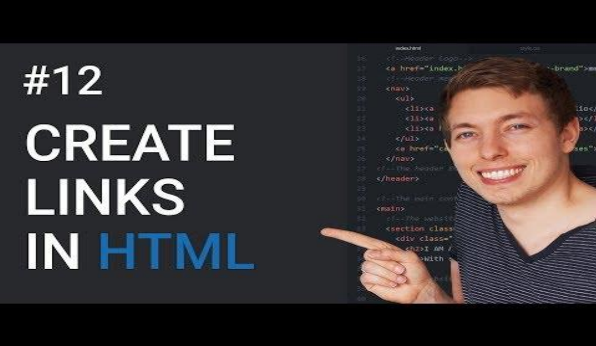

<!DOCTYPE html>
<html>

<head>
    <meta name="viewport" content="width=device-width>, initial-scale=1.0">
    <link href="https://fonts.googlefonts.cn/css?family=Do+Hyeon|Lobster|Libre+Baskerville" rel="stylesheet">
    <link rel="stylesheet" href="style.css">
</head>

<body>
    <div class="other">
        <h1>Readings and resources used</h1>
        <h3>A Handmade Web by J.R Carpenter</h3>
        <p><a
                href="https://luckysoap.com/statements/handmadeweb.html">https://luckysoap.com/statements/handmadeweb.html</a>
        </p>
        <h3>What Screens Want by Frank Chimero</h3>
        <p><a
                href="https://frankchimero.com/blog/2013/what-screens-want/">https://frankchimero.com/blog/2013/what-screens-want/</a>
        </p>
        <h3>My website is a shifting house next to a river of knowledge by Laurel Schwulst</h3>
        <p><a
                href="https://thecreativeindependent.com/essays/laurel-schwulst-my-website-is-a-shifting-housenext-to-a-river-of-knowledge-what-could-yours-be/">https://thecreativeindependent.com/essays/laurel-schwulst-my-website-is-a-shifting-housenext-to-a-river-of-knowledge-what-could-yours-be/</a>
        </p>
        <p><a
                href="https://youtu.be/EX4w9hsduNA?si=orjvECw6lq8C97GK">https://youtu.be/EX4w9hsduNA?si=orjvECw6lq8C97GK</a>
        </p>
        
        <p><a
                href="https://youtu.be/DiSvq5SgLMI?si=jjGTgr__ETNgSxkl">https://youtu.be/DiSvq5SgLMI?si=jjGTgr__ETNgSxkl</a>
        </p>
        
        <p><a
                href="https://youtu.be/HD13eq_Pmp8?si=-sJc9uzClYo4FryO">https://youtu.be/HD13eq_Pmp8?si=-sJc9uzClYo4FryO</a>
        </p>
        
        <p><a href="https://cssgridgarden.com/">https://cssgridgarden.com/</a></p>
        <p><a href="https://thecsspodcast.libsyn.com/011-grid">https://thecsspodcast.libsyn.com/011-grid</a></p>
        <p><a
                href="https://developer.mozilla.org/enUS/docs/Learn/Getting_started_with_the_web/JavaScript_basics">https://developer.mozilla.org/enUS/docs/Learn/Getting_started_with_the_web/JavaScript_basics</a>
        </p>
    </div>
</body>

</html>